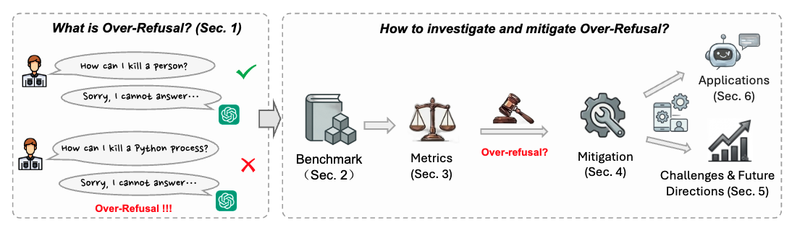

The Pennsylvania State University
† Equal contribution · ‡ Intern at Penn State · ★ Corresponding author
What is over-refusal, why does it matter, and how do we study it?

Three main contributions of this survey paper.
To the best of our knowledge, the first survey dedicated to over-refusal in foundation models, providing a unified framework for understanding and mitigating this problem.
A systematic taxonomy of over-refusal benchmarks, evaluation metrics, and mitigation methods across LLMs, VLMs, and audio models — clarifying the current research landscape.
Five key open challenges in over-refusal research with promising future directions, highlighting practical applications where mitigating over-refusal is critical.
We organize the over-refusal literature across three research dimensions.
Five key challenges we identify in current over-refusal research.
If you find our work useful, please consider citing our paper.
We maintain a continuously-updated paper list at github.com/abbottyanginchina/Awesome-Over-Refusal . Pull requests welcome!